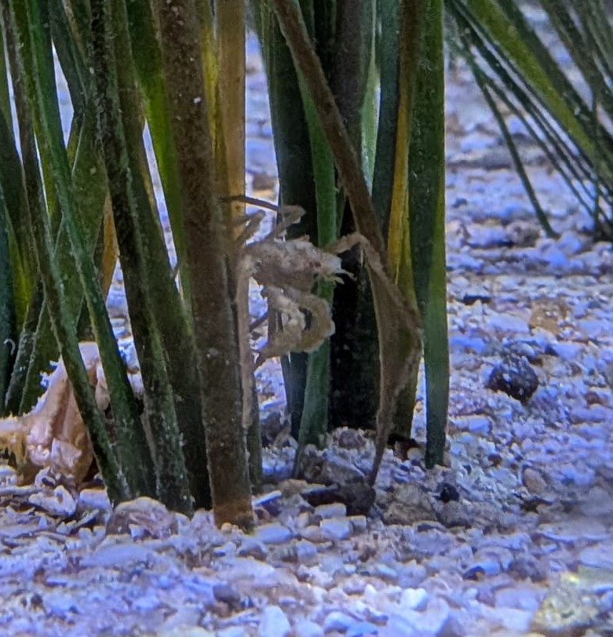

Macropode rostré
Macropodia rostrata
Le macropode rostré est un petit crabe aux très longues pattes, qui ressemble à une petite araignée de mer. Sa carapace triangulaire et son long rostre permettent de le reconnaître.
Informations scientifiques
| Nom scientifique | Macropodia rostrata |
|---|---|
| Nom commun | Macropode rostré |
| Famille | Inachidae |
| Infra-ordre | Brachyura |
| Ordre | Decapoda |
| Classe | Malacostraca |
| Habitat | Fonds rocheux, algues, herbiers et fonds vaseux |
| Répartition | Mer du Nord, Manche, Atlantique et Méditerranée |
| Longueur | Jusqu'à environ 3 cm |
| Alimentation | Algues, petits organismes fixés et petits animaux peu mobiles |
Description
Le macropode rostré est un petit crabe dont la carapace triangulaire
peut atteindre environ 3 cm de longueur, rostre compris. Il possède
des pattes extrêmement longues et fines, caractéristiques des
macropodes.
Son rostre est particulièrement reconnaissable : il mesure environ
deux fois la longueur de l'œil. Sa coloration peut être grise,
jaunâtre ou brun-rougeâtre.
Le macropode rostré est assez mimétique. De petits poils en forme de
crochets lui permettent de fixer des fragments d'algues ou d'autres
organismes sur sa carapace et ses pattes afin de se camoufler.
Il fréquente une grande variété de milieux : rochers couverts
d'algues, herbiers de zostères ou de cymodocées, fonds vaseux,
maërl et zones littorales. Il peut être rencontré depuis l'estran
jusqu'à environ 193 mètres de profondeur.
Son alimentation semble opportuniste. Il consomme notamment des
algues, de petits organismes fixés au substrat et de petits animaux
peu mobiles.